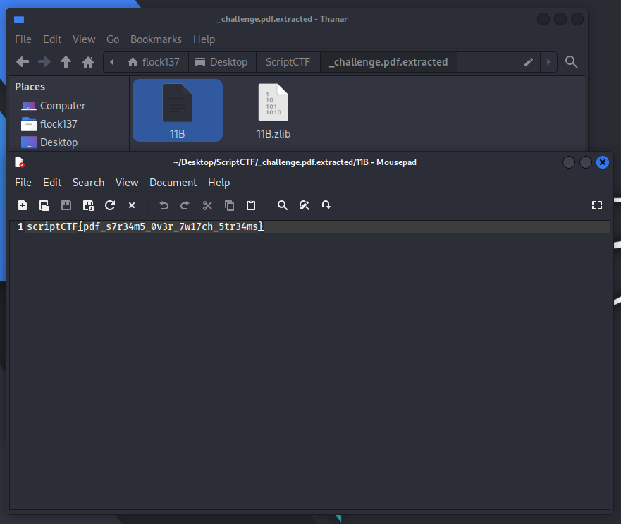
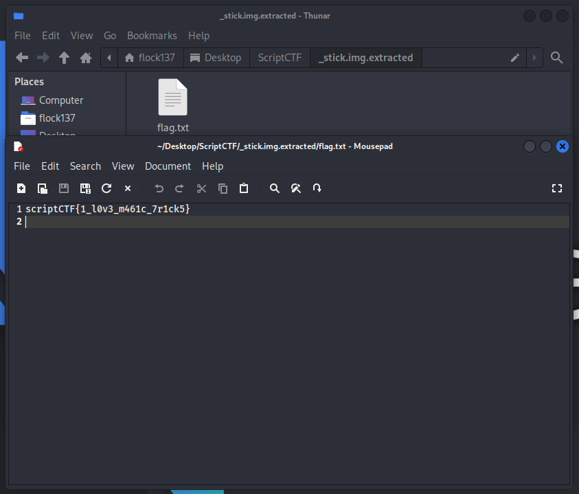
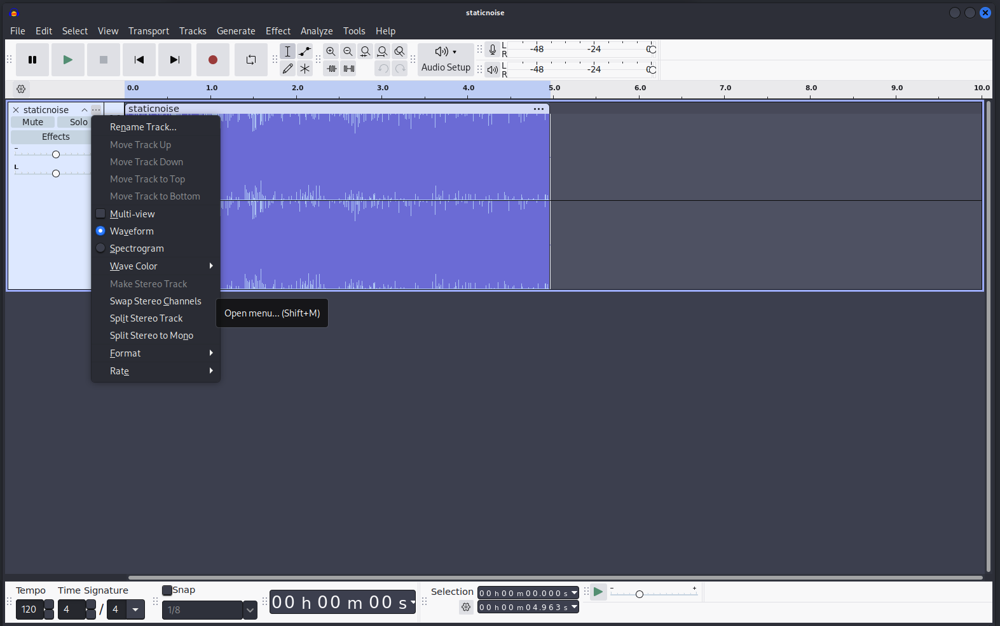
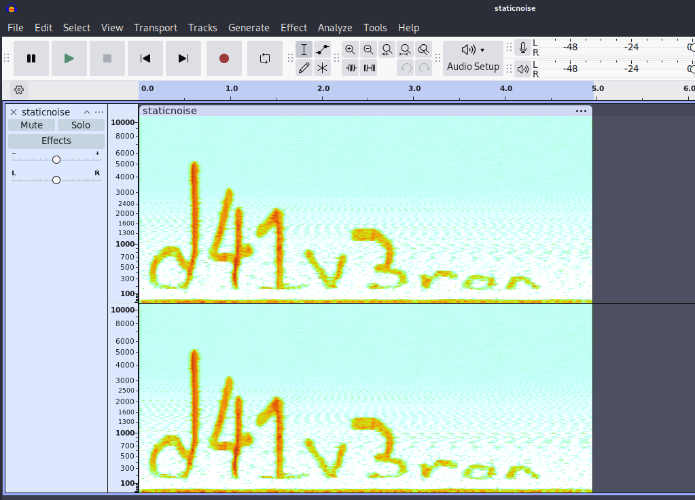

pdf (Author: Connor Chang)
Description: so sad cause no flag in pdf
The challenge attachment can be found here: https://github.com/scriptCTF/scriptCTF2025-OfficialWriteups/blob/main/Forensics/pdf/attachments/challenge.pdf
For this challenge, you can open up Firefox to view the hint in the given PDF, but for this approach, we won’t need to use it. All we have to do is using binwalk
binwalk -e challenge.pdf
In the extracted folder, click on (or cat) the text file (11B or something similar), the flag is in there

diskchal (Author: Connor Chang)
Description: i accidentally vanished my flag, can u find it for me
After doing some basic investigation on the image, I was bored and decided to use binwalk according to… gut feelings. I somehow found the flag.txt and it effectively ended the challenge.

Just some Avocado (Author: Connor Chang)
Description: just an innocent little avocado!
{kind=link}
By instinct, I do a binwalk -e again and found a zip file with password. Bruteforce it using john or hydra with the wordlist rockyou.txt (you can find it on github).
Inside the file, there’s another zip file which contain our flag and a staticnoise.wav, in which by listening to it, I figure out this is a steganography.
Open staticnoise.wav in Audacity, click on the ... on the left pane, tick on “spectrogram”

And, you got the flag!
